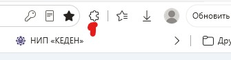
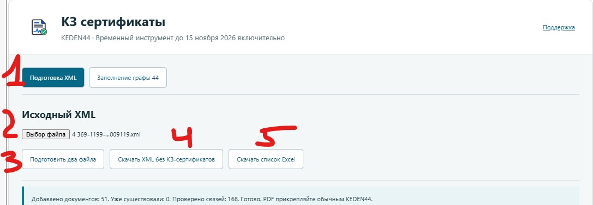

KEDEN44
KEDEN44Временный помощник · 0.1.0 · 2 ноября 2026
КЗ-сертификаты в KEDEN
Сначала загрузите декларацию. Затем добавьте сертификаты.
Если загрузка XML останавливается на проверке КЗ-сертификатов через КТРМ, этот отдельный инструмент разделяет работу на два этапа: подготовка XML без этих записей и последующее заполнение графы 44.
Ваши файлы остаются на вашем компьютере. XML и Excel обрабатываются локально в браузере и не загружаются на сервер KEDEN44. Только после вашего подтверждения реквизиты сертификатов отправляются напрямую в сам KEDEN через ваш действующий вход. Пароли, ключи ЭЦП и токены сессии на наш сервер не передаются.
Бесплатно до 15 ноября 2026 включительно. Время Казахстана (UTC+5). Без подписки и проверки оплаты. После этой даты текущая сборка перестанет выполнять операции; продление автоматически не обещаем.
Точное правило
Только КЗ. Остальное остаётся на месте.
Обрабатываются записи 01401, 01402 и 01403, только если в XML явно указана страна документа KZ.
Сертификаты РФ, документы с другой или неуказанной страной, инвойсы и остальные записи не удаляются. Исходный XML не перезаписывается.
Начните здесь
Установка за несколько шагов
Нужно установить отдельное расширение на компьютере. Архив не нужно загружать в KEDEN.
- Скачайте и распакуйте ZIP. Нажмите на архив правой кнопкой мыши и выберите «Извлечь всё». Сохраните распакованную папку: после установки её не нужно переносить или удалять.
- Откройте страницу расширений. Вставьте в адресную строку Edge:
edge://extensions. - Включите «Режим разработчика». Затем нажмите «Загрузить распакованное».
- Выберите папку
KEDEN44-certificates-0.1.0. Внутри неё должен находиться файлmanifest.json. Выбирайте именно эту папку, не ZIP и не внешнюю папку с архивом. - Нажмите значок нового расширения. Найти его можно в меню расширений браузера. Откроется отдельная вкладка «КЗ сертификаты».
- Скачайте и распакуйте ZIP. Нажмите на архив правой кнопкой мыши и выберите «Извлечь всё». Сохраните распакованную папку: после установки её не нужно переносить или удалять.
- Откройте страницу расширений. Вставьте в адресную строку Chrome:
chrome://extensions. - Включите «Режим разработчика». Затем нажмите «Загрузить распакованное».
- Выберите папку
KEDEN44-certificates-0.1.0. Внутри неё должен находиться файлmanifest.json. Выбирайте именно эту папку, не ZIP и не внешнюю папку с архивом. - Нажмите значок нового расширения. Найти его можно в меню расширений браузера. Откроется отдельная вкладка «КЗ сертификаты».
Если браузер не находит расширение, проверьте, что выбрана папка с manifest.json. Разрешение требуется только для работы с сайтом keden.kgd.gov.kz; пароли и ключи ЭЦП инструменту передавать не нужно.
После установки
Где найти и открыть расширение
В правом верхнем углу Edge или Chrome, рядом с адресной строкой, нажмите значок пазла — «Расширения». В открывшемся списке нажмите «KEDEN44 · КЗ сертификаты». Если рядом есть переключатель показа на панели или значок закрепления, его можно включить для быстрого доступа.

Откроется отдельная вкладка «КЗ сертификаты» с двумя разделами. Если вкладка уже была открыта, браузер может просто переключиться на неё. Это отдельный помощник: в боковой панели основного KEDEN44 этих кнопок нет.
Нет помощника в списке? Откройте edge://extensions или chrome://extensions, проверьте, что он установлен и включён. Если его нет — вернитесь к установке выше.
Два этапа вместо одной зависшей загрузки
От исходного XML до графы 44
- Выберите исходный XML с сертификатами. Во вкладке расширения откройте «Подготовка XML», выберите файл и нажмите «Подготовить два файла».
- Скачайте оба результата. Первый — XML без КЗ-сертификатов. Второй — Excel со списком сертификатов, номерами товаров, датами и страной документа. Они остаются на вашем компьютере.
- Загрузите подготовленный XML в KEDEN. Откройте созданную из него ДТ в этом же браузере. Статус должен быть «Черновик».
- Вернитесь во вкладку помощника. Выберите «Заполнение графы 44», нужную вкладку KEDEN и подготовленный Excel. Если вкладки нет в списке, нажмите кнопку обновления рядом со списком.
- Проверьте привязки. Закройте открытые формы редактирования в KEDEN и нажмите «Проверить привязки». Инструмент покажет, какие документы будут добавлены, а какие уже существуют.
- Подтвердите добавление и дождитесь результата. Реквизиты распределятся по указанным товарам. Один документ может быть связан сразу с несколькими товарами: например,
1-2,3,4. После сохранения выполняется проверка связей. - Прикрепите PDF обычным KEDEN44. Этот помощник заполняет реквизиты, а не загружает PDF. Перед подачей проверьте графу 44 и вложения.
На время заполнения остановите другие автодействия в этой ДТ. Не редактируйте её вручную, не запускайте прикрепление файлов и удержание сессии другим расширением. После завершения можно продолжать обычную работу.
Нажимайте по порядку
Пошагово по скриншотам
Не переходите сразу ко второй вкладке помощника. Порядок такой: подготовить два файла → загрузить новый XML в сам KEDEN и открыть созданную ДТ → вернуть сертификаты через Excel.
Красные цифры на примерах показывают порядок действий. Имена файлов, номера товаров и количество сертификатов у вас будут другими. Нажмите на картинку, чтобы открыть её крупнее.
Этап 1. Получите два файла из исходного XML

- Откройте «Подготовка XML». Это первая вкладка внутри помощника.
- Нажмите «Выбор файла». Выберите исходный XML вашей декларации, в котором ещё есть КЗ-сертификаты.
- Нажмите «Подготовить два файла». Дождитесь завершения обработки.
- Нажмите «Скачать XML без КЗ-сертификатов». Именно этот новый XML нужно загрузить в KEDEN, а не исходный.
- Нажмите «Скачать список Excel». Сохраните его рядом: он понадобится на втором этапе. Самостоятельно заполнять этот Excel не требуется.
Обязательный шаг между этапами: загрузите XML в KEDEN
- Переключитесь с помощника на сам сайт KEDEN. Откройте журнал «Мои декларации».
- В KEDEN нажмите «Загрузить XML». Выберите новый файл, скачанный кнопкой «Скачать XML без КЗ-сертификатов». Не выбирайте исходный XML и не выбирайте Excel.
- Дождитесь завершения загрузки и откройте созданную ДТ. Нужен именно этот новый черновик, а не другая декларация из журнала. Оставьте его открытым в браузере.
- Теперь вернитесь во вкладку «КЗ сертификаты». Только после загрузки и открытия новой ДТ переходите к этапу 2 ниже.
Подготовка двух файлов ещё не загружает ДТ в KEDEN. Excel хранит отдельно убранные сертификаты. Второй этап вернёт их в ту ДТ, которую вы только что создали из нового XML.
Этап 2. Верните сертификаты в созданную ДТ

- Откройте «Заполнение графы 44». Это вторая вкладка помощника.
- Выберите нужный открытый черновик KEDEN. Если его нет в списке, нажмите круглую стрелку справа. Проверьте, что выбрана именно ДТ, созданная из подготовленного XML. Закройте формы редактирования внутри KEDEN.
- Выберите сохранённый список Excel. Нужен файл, который вы скачали на первом этапе для этой же декларации.
- Нажмите «Проверить привязки». Помощник сверит товары и уже имеющиеся записи графы 44. Дождитесь результата проверки.
- Нажмите «Добавить документы в ДТ» и подтвердите действие. Не переключайте ДТ и не редактируйте её, пока помощник работает. Он добавит реквизиты сертификатов к указанным товарам.
Смотрите итоговую строку над таблицей, отмеченную галочкой на примере. «Добавлено документов» — сколько записей добавлено сейчас; «Уже существовали» — сколько совпадающих записей найдено; «Проверено связей» — связи документов с товарами. Эти числа могут отличаться: один сертификат может относиться к нескольким товарам. Строки таблицы «В списке» сами по себе ещё не означают, что добавление закончено.
После завершения откройте графу 44 в KEDEN и проверьте результат. Если она была открыта заранее, закройте и откройте её снова. Помощник возвращает записи сертификатов, но не их PDF-файлы. PDF затем прикрепите обычным KEDEN44.
Не всё добавилось или работа прервалась?
- Дождитесь окончания операции или сообщения об ошибке. Не нажимайте добавление повторно, пока предыдущая операция ещё выполняется. Прочитайте причину в строке результата.
- Проверьте KEDEN. Если вышли из аккаунта — войдите сами. Откройте тот же черновик, закройте формы редактирования и вернитесь в помощник.
- Повторно нажмите «Проверить привязки». При необходимости обновите список вкладок и снова выберите тот же Excel. Уже добавленные совпадающие записи будут учтены — удалять их не нужно.
- Если проверка прошла, снова нажмите «Добавить документы в ДТ». Помощник пропустит полностью совпадающие существующие записи и попробует добавить оставшиеся. Дождитесь нового итога.
Если проверка сообщает о разных реквизитах или неполной привязке одного документа к товарам, остановитесь. Такой конфликт повторными нажатиями не исправляется. Не удаляйте записи наугад: пришлите в поддержку скриншот сообщения. То же самое — если повторная проверка снова завершается ошибкой.
Перед первым запуском
Вопросы и ответы
Это исправление КТРМ?
Нет. Мы не меняем работу КТРМ и не подтверждаем сведения в реестре. Помощник даёт отдельный путь подготовки и добавления реквизитов в черновик. Если сам API KEDEN начнёт отклонять такие сохранения, инструмент покажет ошибку.
Насколько это проверено?
Создание одной записи с привязкой сразу к двум товарам проверено на тестовом черновике в KEDEN. Также проверены чтение XML, сохранение и обратное чтение Excel, защита от дублей и обработка ошибок. Пользовательское тестирование пройдено. Это временная тестовая сборка: перед подачей проверяйте результат своей ДТ.
Что происходит при повторном запуске?
Совпадающие записи, уже существующие у всех указанных товаров, пропускаются. Если реквизиты отличаются или документ есть только у части товаров, автоматическое добавление останавливается: существующие документы не перезаписываются и не удаляются.
А если сохранение зависло или произошёл разлогин?
Не нажимайте добавление многократно. Войдите в KEDEN, откройте нужный черновик и заново выполните «Проверить привязки». При неопределённом результате сохранение не повторяется автоматически: сначала нужно проверить, появился ли документ.
Куда отправляются XML и Excel?
Подготовка файлов выполняется локально в браузере, без загрузки на сервер KEDEN44. При подтверждении добавления реквизиты направляются в KEDEN с использованием вашего действующего входа. Отдельный вход в KEDEN44, пароль или ЭЦП для помощника не требуются.
Нужно ли платить или оформлять подписку?
Нет. Временный помощник работает бесплатно до 15 ноября 2026 включительно. Поддержка проекта добровольная и не продлевает срок этой сборки. Основная подписка KEDEN44 — отдельный продукт.
Как удалить помощника?
После завершения работы откройте страницу расширений браузера и удалите только «KEDEN44 · КЗ сертификаты». Основное расширение KEDEN44 удалять не нужно. Удаление помощника не удаляет добавленные записи из KEDEN.
Инструмент не подписывает и не подаёт ДТ. Он не проверяет применимость или действительность сертификатов: соответствие документов товарам и итоговое заполнение проверяет декларант.
Сделано для нашей работы
Решили вашу проблему?
Этот помощник сделали как временное решение, чтобы не тратить время на ручное заполнение одинаковых реквизитов. Если он помог вам в работе, можно поддержать разработку.
Донат добровольный. На Boosty проверяйте выбранный способ поддержки: подписка может продлеваться автоматически. Для использования этого инструмента оформлять её не нужно.
Скачать и начать работу
ZIP-архив содержит папку расширения и текстовую инструкцию, которую удобно переслать в WhatsApp.
Скачать ZIP · 0.1.0SHA-256: da505538ab862c0878d1fc5d160f942cae2629894771b108a0a2cf79c4ec73ad